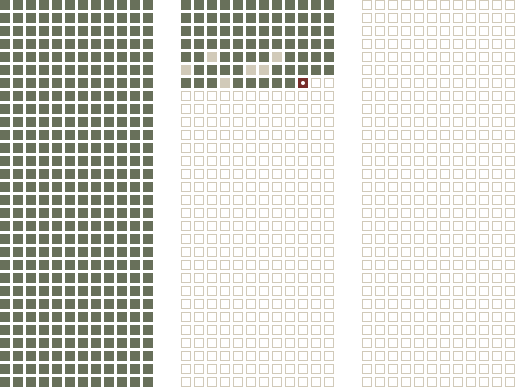
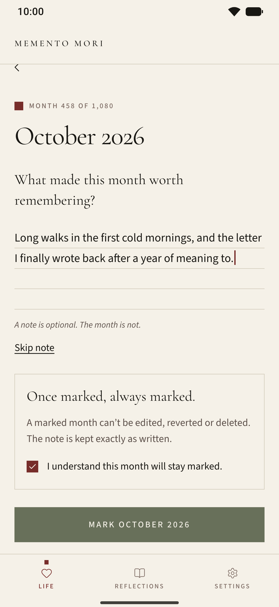
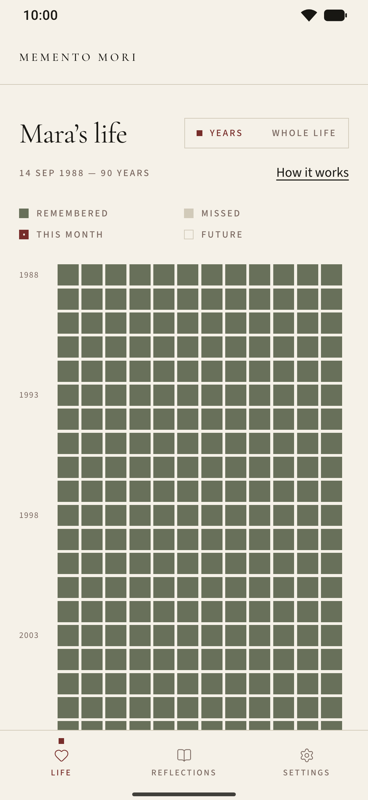
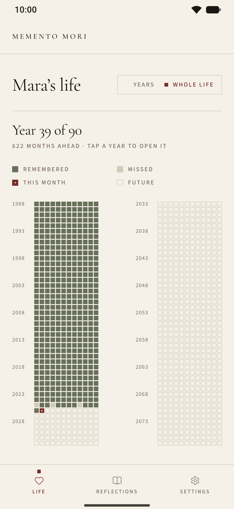
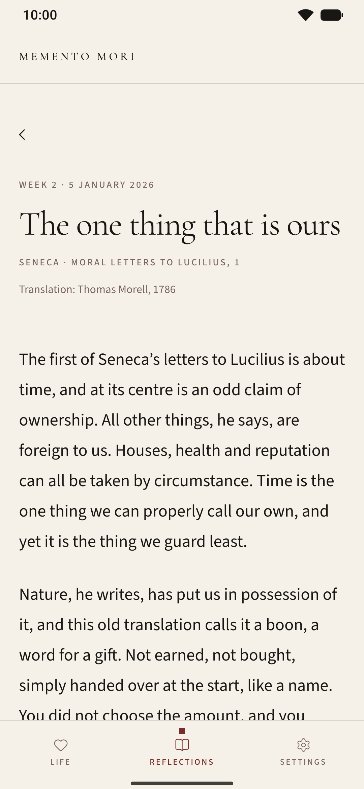
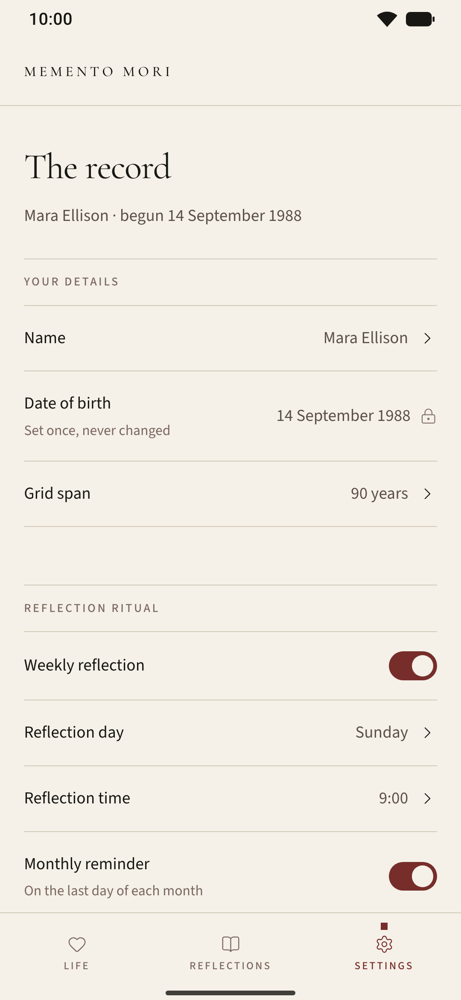
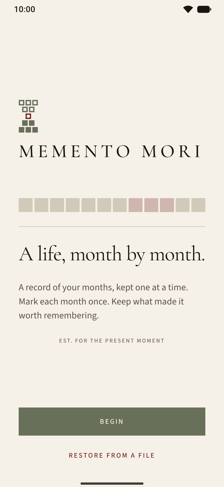

Week 2
The one thing that is ours
“There is nothing we can properly call our own, but Time”
Seneca · Moral Letters to Lucilius, 1 · Translation: Thomas Morell, 1786
What took your hours lately that you would not choose to give again?
Memento Mori
memento mori: an old reminder to be mindful of time, so the present can come into focus.
A record of your months, kept one at a time. Mark each month once. Keep what made it worth remembering.
For Android 7.0 or newer. Free, with no account. Coming to Google Play; the preview installs alongside it, and your record can move over with you.

I · Why “memento mori”
Memento mori is Latin for “remember that you will die”. It can sound grim at first, but it was never meant to frighten. It was a way to bring the present into focus. The idea is older than the phrase: Socrates, in Plato’s Phaedo, called philosophy a practice for dying, and the Stoics after him made it a daily exercise.
Seneca, in his letters and in On the Shortness of Life, argued that life is long enough for anyone who knows how to use it. Marcus Aurelius returned to the thought again and again in the notebook we call the Meditations. Epictetus gave it to his students plainly:
“Let death and exile and every other thing which appears dreadful be daily before your eyes; but most of all death: and you will never think of anything mean nor will you desire anything extravagantly.”
The same thought lived on in Christian contemplation, where the psalm’s “So teach us to number our days” was read as a call to live well in the time given, and in the vanitas still lifes of the seventeenth century, which set an hourglass or a cut flower beside the good things on a table. Montaigne titled an essay That to Study Philosophy Is to Learn to Die, and hoped death would find him “planting my cabbages”.
Across all of it the point is the same: remembering that time ends is a way to value it, not to fear it.
Counted in days, a life runs past thirty thousand. Counted in months, ninety years is 1,080 squares: few enough to fit on a single screen and be seen whole. Life calendars such as Tim Urban’s “Your Life in Weeks” (Wait But Why, 2014) showed how much that one picture can say. Memento Mori draws it in months, so that each square is large enough to hold something: one mark, and a few words about what made the month worth remembering. Like the month itself, each one is written only once.
II · The grid
One row for each year, twelve squares to a row. The grid begins at your birth and ends at the span you choose: ninety years unless you set another.
Each square is one month of your life. One of them is always the month you are living now.

III · Marking a month
Open the square for the month you are in and answer a single question: what made this month worth remembering?
Keep a short note, or mark the month without one. A note is optional. The month is not.
A marked month can’t be edited afterwards, and that is the intention. Marking is meant to be done with care: you pause, choose what this month should be remembered for, and write it once, the way an entry goes into a ledger in ink. Knowing there is no second draft is what gives those few words their weight.
What stays is what you chose to keep at the time, not a version polished later. Tap the square whenever you like to read it again, exactly as you wrote it.
Once marked, always marked.
IV · Two views
The board opens on your years, one row at a time, with the current year in sight and a quiet tally beneath: remembered, missed, still ahead.
Every year on one screen, without scrolling, under a single line that says where you are, such as “Year 39 of 90”. Pinch in on the years view to get there, and tap a year to open it.


V · The weekly reflection
Fifty-three short texts, one for each week of the year, on time, attention and gratitude. Each one opens on a passage, carries a pull quote, and ends with a question to keep for the week.
Past weeks of the year stay in the archive, under Reflections.
Week 2
“There is nothing we can properly call our own, but Time”
Seneca · Moral Letters to Lucilius, 1 · Translation: Thomas Morell, 1786
What took your hours lately that you would not choose to give again?

VI · Reminders
If you allow notifications, the weekly one arrives on the day and at the time you choose, and the monthly one on the last day of each month, at the time you choose. Both are scheduled on the phone itself, and both can be turned off in Settings.
Each week · your day, your time
The weekly reflectionA few minutes for what gives the months their meaning.
Each month · the last day, your time
This month is closingMark what made it worth remembering.

VII · Private by design
It stays on your phone, and the app never sends it anywhere. There is no server to send it to.
Your record is part of Android’s own backup, so setting up a new phone from that backup brings your months with it.
Export my archive gives you a plain file of every month and note. Keep it anywhere, and use Restore from a file to bring it back.
Erase this device removes every month and every note at once. Uninstalling the app removes them too.
The full privacy policy is short, and says the same.
VIII · Install the preview
Memento Mori is on its way to Google Play. Meanwhile, a preview build is shared as an APK file. It needs Android 7.0 or newer.
.apk.
The preview is its own app (com.gabriel.mementomori.preview), so it can sit
beside the Google Play version when that arrives.

IX · Questions